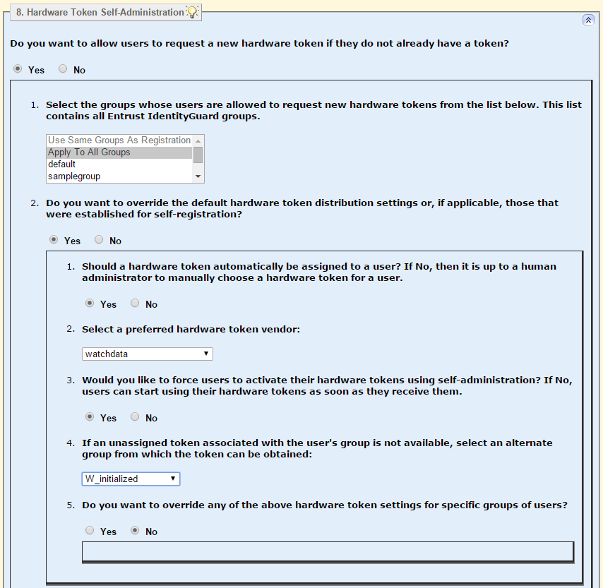

|
IdentityGuard Server 13.0 Administration Guide |
|
IdentityGuard Server 13.0 Administration Guide |
Complete this procedure if you are using Entrust IdentityGuard Self-Service Module and you users to be able to administer their own WatchdataQRO tokens through your Self-Service website.
The procedure is the same as for self-administration for other types of hardware tokens, with the following exceptions:
● WatchdataQRO tokens must be auto-assigned to users (that is, a specific token must be assigned to a specific user by an administrator before it is given to the user
● If you created groups for uninitialized and initialized tokens (as recommended in Create groups for uninitialized and initialized tokens), specify the tokens should be assigned from an alternate group, which is the group of initialized tokens.
● token synchronization is not applicable to this type of token because it has neither a clock nor an event timer that could get out of sync
To configure self-administration of Watchdata QRO tokens
1. Log in to Self-Service Module Configuration interface.
2. Click Administration.
3. From the Table of Contents, select Hardware Token Self Administration.
The Hardware Token Self-Administration section appears.
4. To configure Self-Service self-administration actions for WatchdataQRO tokens, answer the following questions in the Hardware Token Self-Administration section. For details about the other configuration options in this section, see "Configure hardware token self-administration" in the Entrust IdentityGuard Self-Service Module Installation and Configuration Guide.
● Do you want to allow users to request a new hardware token if they do not already have a token?
Select Yes,

– 1. Select the groups whose users are allowed to request new hardware tokens from the list below. This list contains all Entrust IdentityGuard groups.
Select Entrust IdentityGuard user groups to which you want to offer WatchdataQRO tokens..
– 2. Do you want to override the default hardware token distribution settings or, if applicable, those that were established for self-registration?
Select No if you have configured self-registration for WatchdataQRO tokens, and you want the same settings to apply when users administer tokens after registration. In this scenario, no further configuration is required to support the WatchdataQRO tokens. Go to step 5.
Select Yes if you have not configured self-registration for these tokens, or if you want the settings to be different for users who request tokens after they have already registered.
– 1.Should a hardware token automatically be assigned to a user? If No, then it is up to a human administrator to manually choose a hardware token for a user.
Select Yes. When a user requests a token in Self-Service, Self-Service Module selects the next available token of the type specified as the preferred hardware token vendor. Self-Service Module sends an email to the administrator requesting a token for the user, and specifies the serial number of the token that should be delivered. That specific token must be initialized and delivered to the user.
– 2. Select a preferred hardware token vendor:
Select watchdata.
– 3. Would you like to force users to activate their hardware tokens using self-administration? If No, users can start using their hardware tokens as soon as they receive them.
Select Yes if you want users to perform an authentication in Self-Service to activate the token. This setting assigns the tokens in the hold-pending state, and requires that users select the Self-Administration action I'd like to activate my hardware token so I can start using it to change the token to the current state, after which it can be used for authentication.
If you select No, tokens are assigned in the pending state and users can start using their tokens when they receive them.
– 4. If an unassigned token associated with the user's group is not available, select an alternate group from which the token can be obtained.
From the drop-down list, select the group you created to store initialized tokens. In this example, the group is W_initialized.
5. If you want users to be able to request a additional WatchadataQRO tokens, select Yes under Do you want to allow users to request a hardware token eve if they currently have a usable token? Follow the configuration advice in step 4 to configure behavior for this scenario..
6. Click Validate & Save.
7. Restart the Self-Service Module service to have the changes take effect.